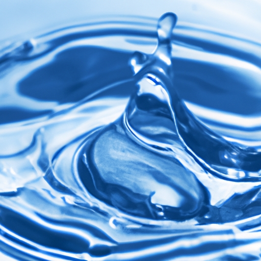

Hydrological Cycle
Hydrological Cycle
Evaporation and transpiration
Condensation and cloud formation
Precipitation and rain patterns
Surface runoff and river systems
Groundwater flow and aquifers
Snowmelt and glacial processes
Water storage in oceans lakes and reservoirs
Soil moisture and infiltration
Water balance and budgeting
Human impact on the hydrological cycle
Marine Ecosystems
Marine Ecosystems
Coral reefs and their biodiversity
Mangrove forests as coastal protectors
Ocean currents and climate regulation
Deepsea habitats and extremophiles
Intertidal zones and estuarine ecosystems
Marine food webs and trophic levels
Freshwater Ecosystems
Freshwater Ecosystems
Conservation efforts for marine species
Marine biogeochemical cycles
Impact of global warming on oceans
Water Resource Management
Water Resource Management
Rivers streams and creeks ecosystems
Lakes ponds wetlands habitats
Biodiversity in freshwater environments
Aquatic plants role in oxygenation
Freshwater fish species diversity
Invasive species impact on freshwater systems
Pollution threats to freshwater sources
Conservation strategies for freshwater biomes
Role of wetlands in flood control
Importance of riparian buffers
Cultural Significance of Water
Cultural Significance of Water
Sustainable water use practices
Desalination technologies for fresh water supply
Wastewater treatment processes
Rainwater harvesting techniques
Management of water during drought conditions
Transboundary water resource politics
Infrastructure for water distribution
Agricultural irrigation efficiency
Urban water demand management
Impact of climate change on water resources
About Us
Contact Us
Lakes ponds wetlands habitats
Water Pollution
Lakes, ponds, and wetlands are essential habitats that support a rich biodiversity of flora and fauna.
Biodiversity in freshwater environments
.
Water Conflict
These aquatic ecosystems play crucial roles in the environment, offering numerous benefits to humans as well as to wildlife.
Lakes ponds wetlands habitats - Water in Agriculture
Thermal Pollution
Water Softening
Water Conflict
Each type of habitat has unique characteristics and functions that contribute to the overall health of our planet.
**Lakes** are substantial bodies of freshwater that accumulate in hollows across landscapes. Formed by various geological processes such as glacier retreat or volcanic activity, lakes provide habitats for a variety of organisms including fish, amphibians, birds, and countless invertebrates.
Lakes ponds wetlands habitats - Glaciers and Ice Caps
Water Filtration
Water Filtration
Water Filtration
Water Filtration
They act as natural reservoirs storing large amounts of water which supports agriculture, recreation, and can be a source of hydroelectric power.
**Ponds**, on the other hand, are smaller than lakes and often seasonal, drying up at certain times of the year. Despite their size, ponds have an exceptionally high level of biological activity.
Glaciers and Ice Caps
They serve as breeding grounds for many species such as dragonflies and frogs whose tadpoles find refuge among the pond's vegetation.
**Wetlands**, encompassing marshes, swamps, bogs, and fens, are transitional zones between terrestrial and aquatic environments where water is present at or near the surface for part or all of the year. Wetlands filter pollutants from water through the action of plants absorbing heavy metals and other contaminants.
Rain Gardens
This filtration process ensures cleaner rivers and streams while also recharging groundwater supplies.
The ecological importance of these habitats cannot be overstated; they regulate water cycles by controlling floods through absorption during heavy rainfall events while releasing stored water during droughts. Moreover, they sequester carbon effectively combatting climate change by trapping greenhouse gases within their sediments.
Unfortunately, these critical habitats face threats due to human activities like urban development leading to habitat destruction or pollution from industrial runoff which introduces toxins into these delicate ecosystems.
Lakes ponds wetlands habitats - Water in Agriculture
Climate change further exacerbates these pressures with rising temperatures altering precipitation patterns potentially drying out some wetlands completely.
Conservation efforts are imperative for preserving these vital habitats for future generations not only because they harbor immense biodiversity but also because they render services indispensable to human survival – flood mitigation air purification carbon sequestration among others.
Lakes ponds wetlands habitats - Water Softening
Water Conflict
Glaciers and Ice Caps
Rain Gardens
Thermal Pollution
Collaborative measures involving government policies community engagement education initiatives can ensure protection restoration sustainability lakes ponds wetlands worldwide.
In conclusion lakes ponds wetlands represent more than mere features on our landscape – they are dynamic systems integral maintaining ecological balance supporting life multitude forms safeguarding our environmental legacy must collectively strive protect cherish invaluable resources lest we compromise very foundations upon which depend both nature humanity alike.

Hydrological Cycle
Check our other pages :
Water balance and budgeting
Surface runoff and river systems
Water storage in oceans lakes and reservoirs
Marine Ecosystems
Frequently Asked Questions
What defines a lake, pond, or wetland, and how do they differ from each other?
A lake is a large body of water surrounded by land that can be either fresh or saltwater. Ponds are smaller than lakes and are usually shallow enough for sunlight to reach the bottom, allowing aquatic plants to grow throughout. Wetlands are areas where water covers the soil or is present either at or near the surface of the soil all year or for varying periods of time during the year. They can include marshes, swamps, and bogs. The primary difference lies in their size, depth, and the duration of water presence.
Why are lakes, ponds, and wetlands important to ecosystems?
Lakes, ponds, and wetlands play critical roles in ecosystems as they provide habitats for a diverse range of flora and fauna; act as natural filters that clean water by trapping pollutants; mitigate flooding by absorbing excess rainwater; recharge groundwater supplies; and support complex food webs. They also serve as important resources for human activities such as agriculture, drinking water supply, recreation, and tourism.
How do human activities impact lakes, ponds, and wetlands?
Human activities such as urban development can lead to habitat destruction and loss of biodiversity. Pollution from agricultural runoff containing pesticides and fertilizers can cause eutrophication (excessive nutrients leading to algal blooms) which depletes oxygen levels in these bodies of water harming aquatic life. Draining wetlands for development disrupts hydrological cycles affecting both local weather patterns and global climate change effects.
What conservation efforts are being implemented to protect these aquatic habitats?
Conservation efforts include creating protected areas like national parks or wildlife refuges where development is restricted; implementing sustainable management practices like buffer zones around these habitats to filter out pollutants before they reach the waterbody; restoring degraded habitats through projects such as reforestation around lakeshores; enforcing regulations on pollution discharge into these waters; promoting responsible land use planning; engaging communities in citizen science monitoring programs; advocating for policies aimed at mitigating climate change impacts on these ecosystems.